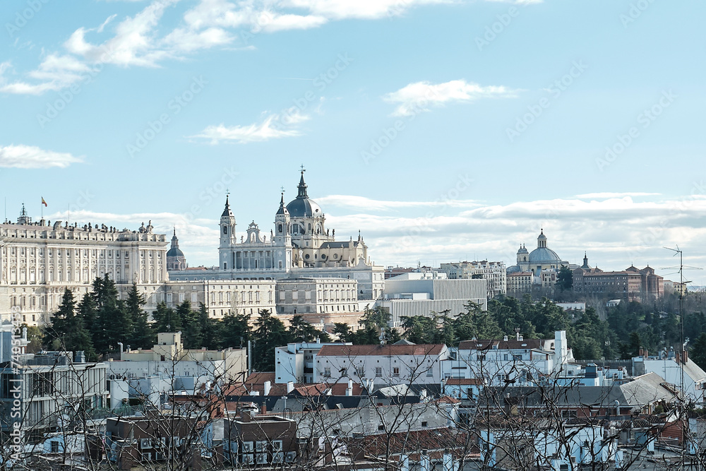

📍
¡Encuentra tu próximo destino!
Madrid: El corazón de España

Madrid es la vibrante capital de España, famosa por sus ricos museos, su arquitectura clásica, sus amplias avenidas y una vida nocturna que nunca se detiene. Es una ciudad que acoge a todos con los brazos abiertos.
Lugares imprescindibles que debes visitar:
- La Puerta del Sol: El punto de encuentro por excelencia y el lugar donde se encuentra el famoso "Kilómetro Cero" de España.
- El Parque del Retiro: El pulmón verde de la ciudad, perfecto para un paseo en barca por su estanque o visitar el Palacio de Cristal.
- Museo del Prado: Una de las pinacotecas más importantes del mundo, hogar de obras maestras de Velázquez, Goya y El Bosco.
- La Gran Vía: La calle que nunca duerme, llena de teatros, cines, tiendas y edificios espectaculares.
Y, por supuesto, no puedes irte de Madrid sin probar su famoso bocadillo de calamares en los alrededores de la Plaza Mayor.